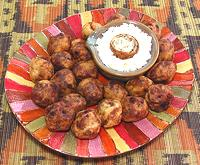

|
Kacholi - Potato FrittersTanzania - Kacholi | ||||
| Makes: Effort: Sched: DoAhead: |
36 ea *** 50 min Most |
These fritters are a popular street food in Tanzania, served most often with Coconut Chutney. They are best served warm, and can be reheated in the oven. To eat, I just break one in half and place a dab of Chutney on each half. | |||
|
------- 1-1/2 ar 1 1/3 3 3 1/2 1-1/2 3/4 ------- 2/3 1/3 1/2 ------- ar ------- |
---- # lrg c cl T T T t ---- c c t ---- ---- |
-- Dough Potatoes (1) Water Habanero (2) Onion Garlic Cilantro Coriander Seed Lime Juice Salt -- Batter (3) Chickpea Flour (4) Water Salt ----------- Oil, Deep Fry (5) -- Serve With Coconut Chutney (6) |
MAKE - (50 min)
|